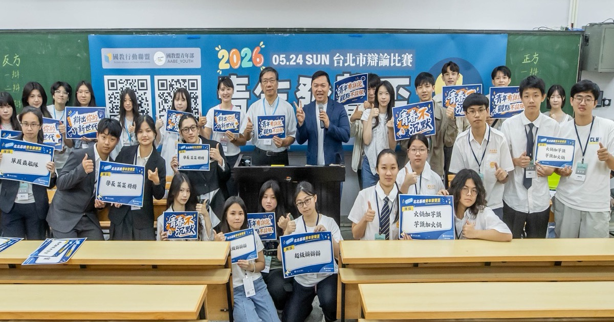
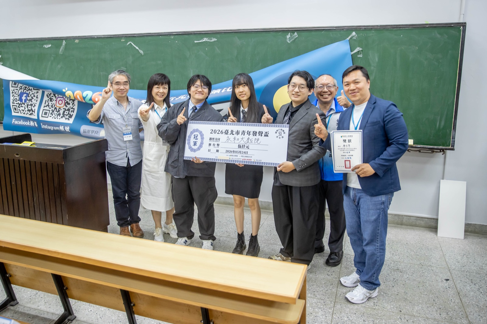
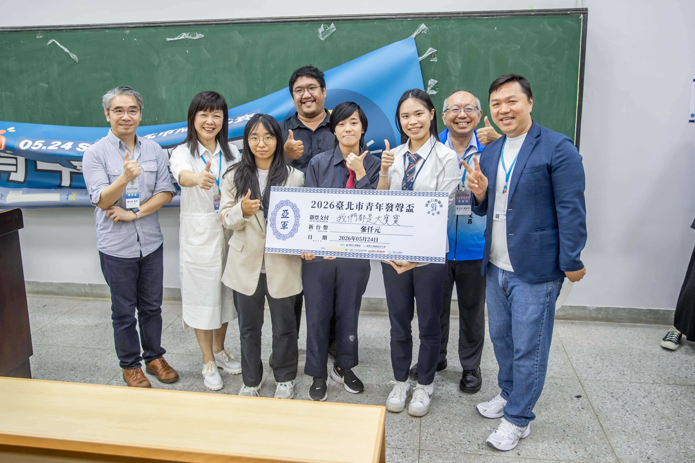
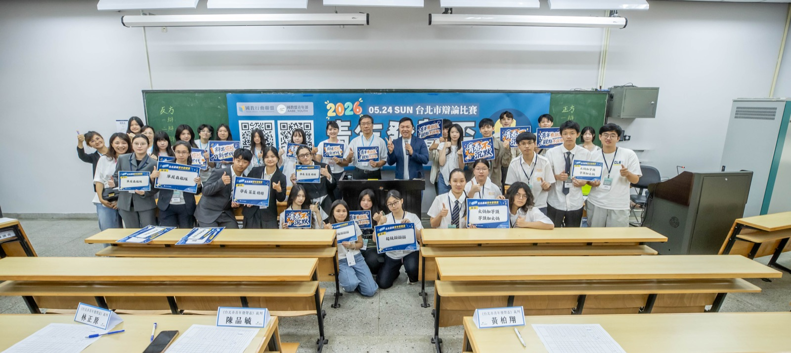

2026 臺北市青年發聲盃公共議題辯論賽──無菸城市
跨校青年走進台大，為「真正無菸的城市」正反交鋒
2026 年 5 月 24 日
國立臺灣大學應用力學研究所
國教行動聯盟青年部 主辦

2026.05.24 臺北市青年發聲盃「無菸城市」辯論賽 ─ 正反雙方學生於國立臺灣大學應用力學研究所合影
活動資訊
- 日期
- 2026 年 5 月 24 日（六）
- 地點
- 國立臺灣大學應用力學研究所
- 主辦
- 國教行動聯盟青年部
- 共同主辦
- 全球慈善行動協會 · 中華仁親社區關懷協會 · 國際兒少人權促進會 · 董氏基金會
- 參賽對象
- 北北基桃國中、高中職及大專院校學生（跨校組隊）
- 辯題
- 「您是否支持 2026 年台北市推動『無菸城市』之政策？」
關於這場辯論賽
國教盟青年部於 5 月 24 日假國立臺灣大學應用力學研究所舉辦「2026 臺北市青年發聲盃公共議題辯論賽」，與全球慈善行動協會、中華仁親社區關懷協會、國際兒少人權促進會、董氏基金會共同主辦，邀集北北基桃國中、高中職及大專院校學生跨校組隊，針對「您是否支持 2026 年台北市推動『無菸城市』之政策？」進行辯論。
這場辯論賽展現青年世代對公共政策的理性參與。無論支持或反對，青年們的論點都指向同一個核心：要的不是「看起來無菸」，而是「真正無菸」的城市。青年部後續將辯論賽彙整的政策疑問，整理為對台北市無菸城市政策的三道考驗（二手菸外溢、執行配套、加熱菸納管），詳見下方延伸閱讀。
得獎隊伍

第一名 · 冠軍
永和小戲院
國立臺北科技大學
國立臺北教育大學
國立臺灣海洋大學
國立臺北教育大學
國立臺灣海洋大學

第二名 · 亞軍
我們都是大寶寶
國立臺北教育大學
淡江大學
國立臺灣師範大學
淡江大學
國立臺灣師範大學

第三名 · 季軍
學長 菜菜 撈撈
世新大學
中原大學
國立臺灣科技大學
中原大學
國立臺灣科技大學
活動花絮
